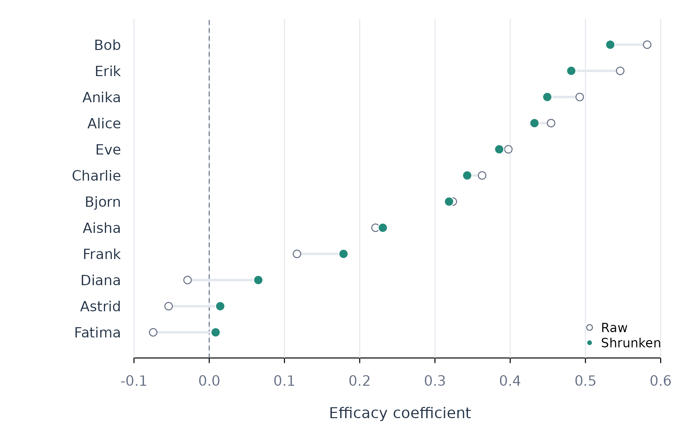

Stabilizing Person-Specific Coefficients with shrink_coefs()
Source:vignettes/shrink-coefs.Rmd
shrink-coefs.RmdAnalytic question
shrink_coefs() stabilizes each person’s coefficient
using the pooled coefficient distribution. The function takes a fit with
individual estimates and standard errors. It returns one tidy row per
person and term with the raw estimate, standard error, shrinkage weight,
and shrunken estimate.
shrink_coefs() uses an empirical-Bayes rule. The
shrinkage weight is the estimated between-person variance divided by
that variance plus the person’s sampling variance. A weight near one
retains most of the person’s raw estimate. A weight near zero moves the
estimate toward the pooled mean.
Estimate individual slopes
fit_lm() estimates separate effort regressions for the
12 learners. The efficacy term is retained because its person-specific
slopes and standard errors are the quantities of interest.
individual_fit <- fit_lm(analysis_data, y = "effort", x = c("efficacy", "monitoring"), id = "name", time = "day", scope = "individual")
coefs(individual_fit, scope = "individual", n = 8)
#> scope model estimator subject subgroup term estimate std_error
#> 1 individual lm native Aisha .none (Intercept) 60.8053781 4.48242570
#> 2 individual lm native Aisha .none efficacy 0.2209651 0.08212755
#> 3 individual lm native Aisha .none monitoring 0.1495086 0.06851997
#> 4 individual lm native Alice .none (Intercept) 64.5515532 6.45537709
#> 5 individual lm native Alice .none efficacy 0.4543041 0.07660304
#> 6 individual lm native Alice .none monitoring -0.3276520 0.08001883
#> 7 individual lm native Anika .none (Intercept) 23.1867445 5.98939755
#> 8 individual lm native Anika .none efficacy 0.4923880 0.10132704
#> statistic p_value
#> 1 13.565284 4.720708e-26
#> 2 2.690512 8.143071e-03
#> 3 2.181971 3.104404e-02
#> 4 9.999656 1.589570e-17
#> 5 5.930628 2.933652e-08
#> 6 -4.094686 7.669590e-05
#> 7 3.871298 1.760110e-04
#> 8 4.859394 3.568461e-06coefs() displays raw person-specific estimates in Table
1. Differences among these values contain both process heterogeneity and
sampling error. Ranking learners by the raw values would treat both
sources as substantive.
Apply empirical-Bayes shrinkage
shrink_coefs() estimates the pooled distribution and
applies a learner-specific weight. Table 2 retains only the efficacy
term through a public argument.
shrunken_coefs <- shrink_coefs(individual_fit, term = "efficacy")
shrunken_coefs
#> SHRUNKEN PERSON EFFECTS
#> People 12
#> Terms 1
#>
#> subject term raw S.E. weight shrunken
#> -----------------------------------------------------------
#> Aisha efficacy 0.2210 0.0821 0.852 0.2307
#> Alice efficacy 0.4543 0.0766 0.868 0.4322
#> Anika efficacy 0.4924 0.1013 0.790 0.4493
#> Astrid efficacy -0.0540 0.0988 0.799 0.0146
#> Bjorn efficacy 0.3237 0.0778 0.865 0.3187
#> Bob efficacy 0.5820 0.0878 0.834 0.5330
#> Charlie efficacy 0.3627 0.1169 0.739 0.3428
#> Diana efficacy -0.0288 0.1282 0.702 0.0652
#> Erik efficacy 0.5462 0.1138 0.749 0.4811
#> Eve efficacy 0.3975 0.0689 0.891 0.3854
#> Fatima efficacy -0.0745 0.1075 0.770 0.0085
#> Frank efficacy 0.1166 0.1487 0.636 0.1785
#>
#> weight = how much of the person's own estimate is keptshrink_coefs() moves every efficacy slope toward the
pooled efficacy effect in Table 2. Learners with larger standard errors
receive smaller weights and move farther. The shrunken values preserve
estimated heterogeneity while reducing the influence of measurement
noise.
Plot raw and shrunken estimates
The paired-dot display places learners on rows and coefficients on the horizontal axis. Each line begins at the raw estimate and ends at the shrunken estimate, making both the direction and size of shrinkage visible.
shrunken_coefs <- shrunken_coefs[order(shrunken_coefs$shrunken), ]
at <- seq_len(nrow(shrunken_coefs))
limits <- range(c(shrunken_coefs$estimate, shrunken_coefs$shrunken, 0))
figure_begin(c(4.2, 7, 1, 1))
plot(shrunken_coefs$shrunken, at, xlim = limits,
ylim = c(0.5, length(at) + 0.5), yaxt = "n", pch = 21,
bg = fig_col["teal"], col = "white", cex = 1.3,
xlab = "Efficacy coefficient", ylab = "")
figure_grid(x = TRUE, y = FALSE)
abline(v = 0, col = fig_col["muted"], lty = 2)
segments(shrunken_coefs$estimate, at, shrunken_coefs$shrunken, at,
col = fig_col["grid"], lwd = 2.4)
points(shrunken_coefs$estimate, at, pch = 21, bg = "white",
col = fig_col["muted"], cex = 1.05)
points(shrunken_coefs$shrunken, at, pch = 21, bg = fig_col["teal"],
col = "white", cex = 1.3)
axis(2, at = at, labels = shrunken_coefs$subject, tick = FALSE,
col.axis = fig_col["ink"])
legend("bottomright", c("Raw", "Shrunken"), pch = 21,
pt.bg = c("white", fig_col["teal"]),
col = c(fig_col["muted"], "white"), bty = "n", cex = 0.8)
Figure 1. Raw and empirical-Bayes efficacy coefficients for 12 learners.
Figure 1 shows the raw-to-shrunken movement explicitly. Extreme raw values move towards the pooled centre, while precise estimates move less. The plot should be interpreted with the weight column in Table 2: longer connecting lines indicate that the individual’s estimate carried less weight.
Assumptions and failure checks
shrink_coefs() inherits the random-effects assumptions
of pool_coefs(). The method assumes independent people and
a coefficient distribution that can be summarized by one mean and
variance. A multimodal coefficient distribution can make one pooled
centre inadequate.
shrink_coefs() requires standard errors. It does not
accept coefficient tables that assign equal certainty without evidence.
Shrinkage estimates are appropriate for description and stabilized
prediction. Their usual intervals require additional modelling if formal
person-specific inference is the goal.
When to use which
shrink_coefs() is appropriate for stabilized
person-level estimates. pool_coefs() is appropriate for the
population mean and between-person spread. test_subgroups()
is appropriate before replacing one coefficient distribution with
discrete classes. Raw individual coefficients remain useful when each
person has enough information and minimal sampling error.